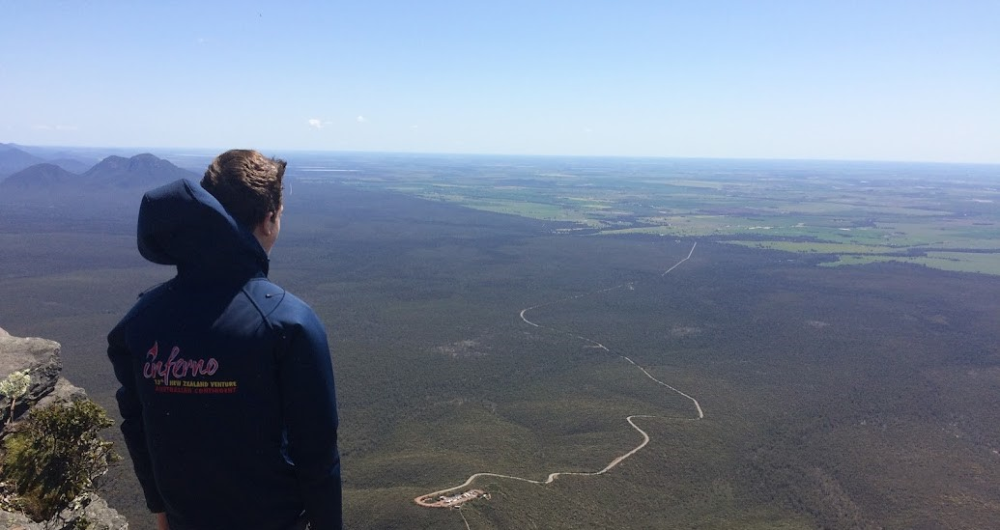

Hi there!
My name is Bryce Duncan, I am a final year bachelor of Technology (Computer Systems and Networking) student at Curtin University.

My name is Bryce Duncan, I am a final year bachelor of Technology (Computer Systems and Networking) student at Curtin University.
Filed under Certifications, Cisco
During my Internship at Eilbeck Cranes I was designing a solution for the company to manage compliance. This involved researching options, reading documentation, communicating with the developers and taking nessessary training.
I also gained experience with processes in the manufactering industry.
Bryce was very professional and completed the task on time, we are happy with Bryce's internship.
- Santhosh - Internship Supervisor
Working at a wide variety of venues thoughout metro and country Western Australia I have developed many skills and passions which influence my current day values including dedication and always learning.
2019-Current
I maintain the website and IT requirements for the Hills Night Hockey Association in Mundaring. Duties include email administration, score (data) input and finding technical solutions to problems identified by members, commitee or myself for the Association.
In 2019 I completly rebranded the Website to reflect the new facilities used by the Association. This involved learning new wordpress, database and php skills and associated troubleshooting skills.
2016-Current Volunteer position
I have experience with the following technologies
And many more!
In accordance with my personal value of always learning, I always take on feedback and attempt to incorporate into my work.
I always approach my tasks with a can do attitude.
I always want to learn more, that's why I made this website in the first place!
Outside of work I enjoy outdoor adventure activities including Hiking local or overseas trails, cycling, Geocaching and Kayaking.
I have been a member of the World Wide Scouting Movement for over 13 years with various leadership and challening roles.
During my 13+ years I have achieved many pristigous awards including The Queen Scout Award, Australian Scout Medallion and the Adult Recognition Award.
I also enjoy photography, particularly of nature. All images featured on this website were taken by myself (Except images of me).
 I am a final Year Technology student aiming to enter the information technology field to apply and expand my understanding and knowledge of technology and ICT, further develop my problem-solving skills and gain hands on experience.
I am a final Year Technology student aiming to enter the information technology field to apply and expand my understanding and knowledge of technology and ICT, further develop my problem-solving skills and gain hands on experience.